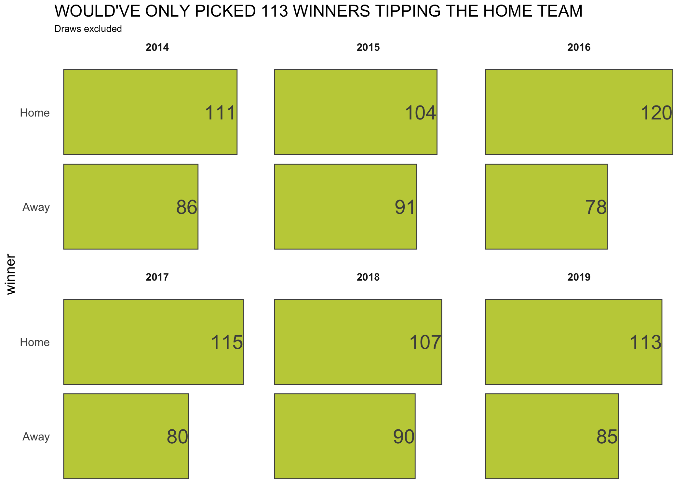
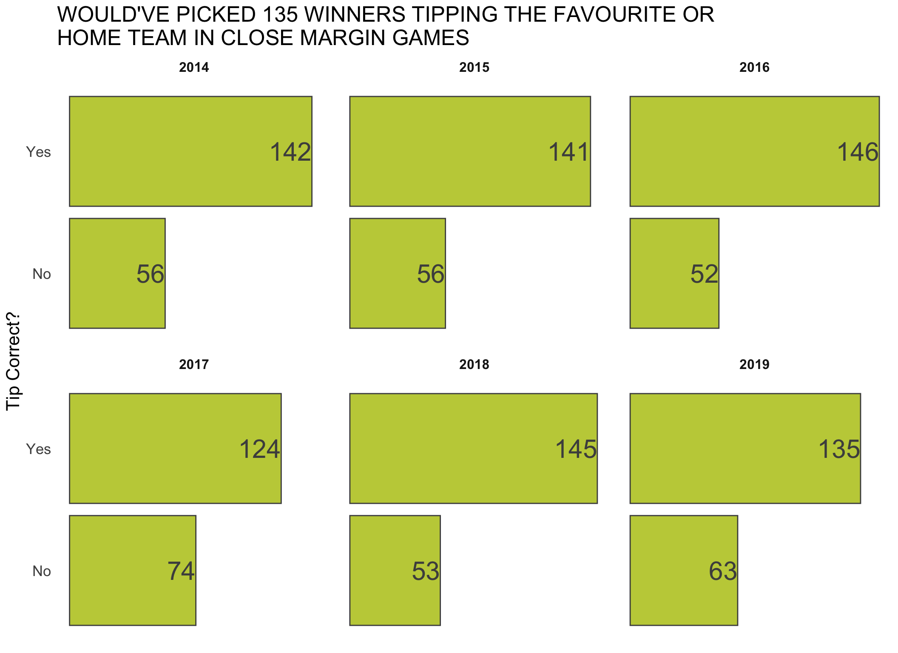
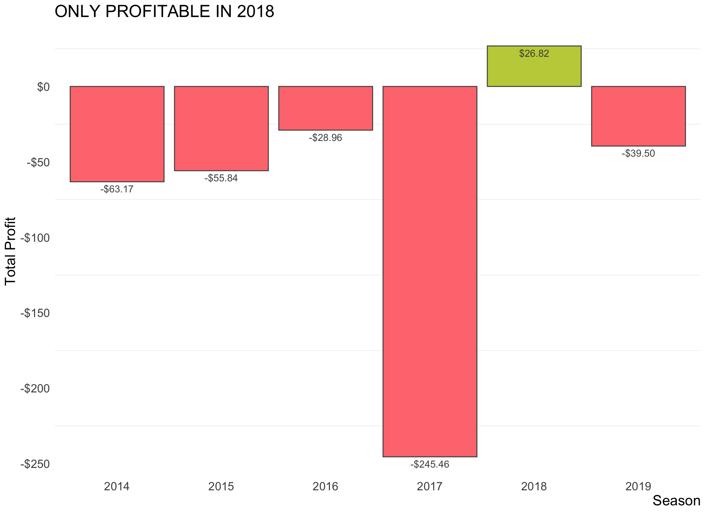

I feel like I always overthink footy tipping. During each round, I make myself believe I have some sort of secret sauce and conjure up visions in my head of nailing a solid roughy… and then fall flat half way through the season and give up…
So then I thought, surely there’s an easier way. Only problem was, I thought this up last weekend (during the last season of the round)…I wonder how many tips I would’ve gotten this year had I just picked the home team every game…

Ok, so 113 winners wouldn’t have been good enough…
Using the Market
Then I thought, what if I just picked the favourites in the betting market for each game, but with a twist? If the line was less than half a goal (3 points - virtually a coin flip), then I’d just go safe and pick the home team.
The betting odds data comes from the Australian Sports Betting website which uses Bet365 odds.

Wow!!
Ok, so I would’ve been able to (theoretically) get my tips up to 135 for the 2019 season - a really handy result, and beating some popular machine learning models that are out there! This 135 correct tips also doesn’t count draws being awarded as a point, as some tipping competitions do (although there were no draws in 2019).
Other than 2017, this model - I’ll refer to it as “Simple Model” - would’ve been fairly competitive in each season since 2014.
Maybe next year, I’ll know what I’ll employ… my Simple Model!
But can we make some money
Ok, so now that I know that the Simple Model’* performs fairly competitively in tipping comps, I want to know if I can make some money using this method?
To answer this question, I’m placing a theoretic $10 on each game and seeing how many bags of cash are left at the end.

Hmmm… so using this method, I would’ve lost almost $40, even though it was good enough to win some tipping comps.
Only in 2018 would this method have worked, with a net profit of $26.82…
The 2017 season would’ve been the most brutal, losing just over $245 for the season.
To find out where everything went so wrong, we can use an animated line plot that tracks the overall profit throughout each round of the season. To get a rundown on how the animated plot was generated, see this post here.

During the 2019 season, we can see that things would’ve started off really bleak - after round five, I would’ve been down over $120! Things started to pick up from there though, even being in the black at round 14. At no point during the 2015 and 2017 seasons would this model have been profitable.
While keeping me competitive in footy tipping comps, this model certainly isn’t going to allow me to retire anytime soon.